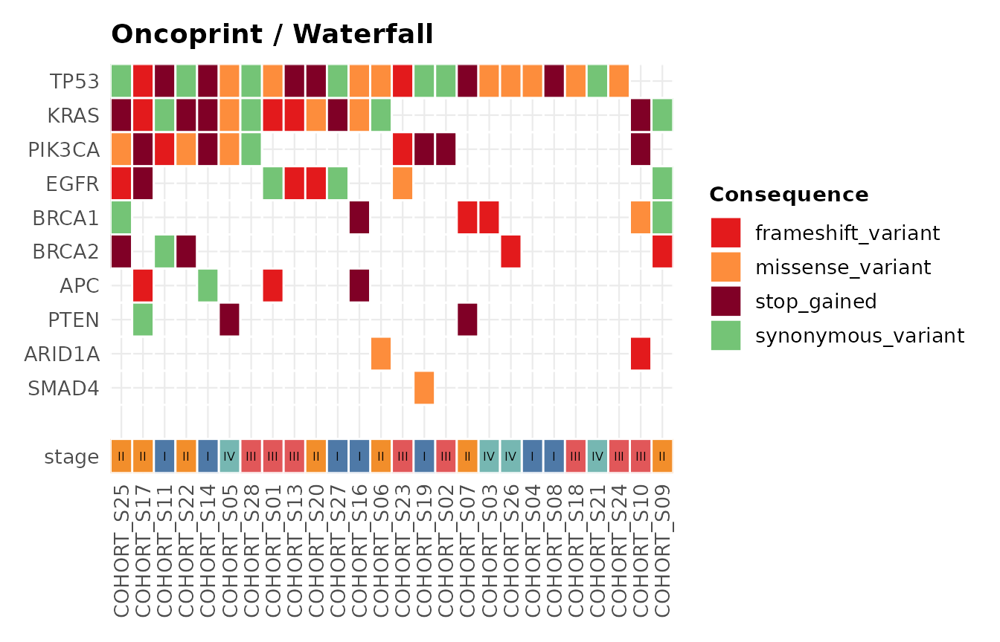
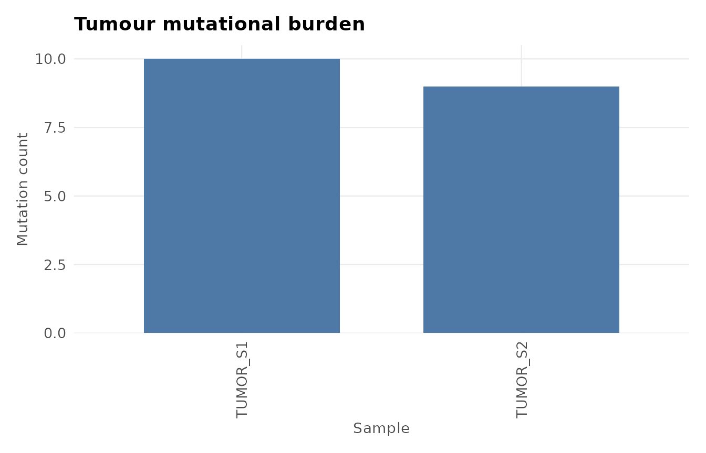

library(ggvariant)
vcf_file <- system.file("extdata", "example.vcf", package = "ggvariant")
variants <- read_vcf(vcf_file)
#> ℹ Reading VCF: example.vcf
#> ✔ Reading VCF: example.vcf [26ms]
#>
#> Loaded 19 variant records across 7 chromosomes.This gallery collects one example of every ggvariant
plot type against the bundled example VCF. See
vignette("ggvariant") for a narrated walkthrough, and the
function reference for the full argument list of each plot.
Mutational spectrum
plot_variant_spectrum(variants, facet_by_sample = TRUE)
#> Excluded 2 non-SNV records from spectrum plot.
Oncoprint / waterfall plot
plot_oncoprint() and plot_waterfall() are
the same function under the two names used by different communities —
“oncoprint” in the ComplexHeatmap/ cBioPortal vocabulary,
“waterfall plot” in the GenVisR/maftools
vocabulary. A waterfall plot and an oncoprint are the same
visualisation: plot_waterfall() and
plot_oncoprint() are aliases for one function and produce
identical output — use whichever name your field uses.
The bundled example VCF has only two samples, too few to show the
cascade staircase this plot is built around. The cohort below is
illustrative synthetic data generated just for this article (not the
package’s example data), sized like a real cohort so the staircase and
the annotation track are both visible, with a clinical
stage track added via annotation:
set.seed(42)
genes <- c("TP53", "KRAS", "PIK3CA", "EGFR", "BRCA1",
"BRCA2", "APC", "PTEN", "ARID1A", "SMAD4")
gene_freq <- c(TP53 = 0.85, KRAS = 0.55, PIK3CA = 0.40, EGFR = 0.30,
BRCA1 = 0.22, BRCA2 = 0.18, APC = 0.14, PTEN = 0.10,
ARID1A = 0.07, SMAD4 = 0.05)
samples <- sprintf("COHORT_S%02d", 1:28)
consequences <- c("missense_variant", "stop_gained",
"frameshift_variant", "synonymous_variant")
cohort <- do.call(rbind, lapply(genes, function(g) {
n_mut <- max(1, round(gene_freq[[g]] * length(samples)))
data.frame(
chrom = "chr1", pos = sample(1e6:2e6, n_mut),
ref = "A", alt = "T", gene = g,
sample = sample(samples, n_mut),
consequence = sample(consequences, n_mut, replace = TRUE),
stringsAsFactors = FALSE
)
}))
cohort_variants <- coerce_variants(cohort)
clinical_stage <- data.frame(
sample = samples,
stage = sample(c("I", "II", "III", "IV"), length(samples), replace = TRUE)
)
plot_waterfall(cohort_variants, top_n = 10, annotation = clinical_stage)
Tumour mutational burden
Reusing the same illustrative synthetic cohort from the oncoprint example above gives a more realistic view of per-sample burden across 28 samples than the two-sample example VCF would:
plot_tmb(cohort_variants)